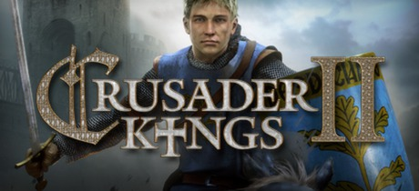

Ayoub Ben Thabet
Marketing & Business Development
Learning to code @LeWagon
Introduction:
I have a business & marketing background and experiences in Marketing, Business Development and Product Management. Currently, student at Le Wagon Lyon, learning to code! Huge Video games fun and player, I spend a lot of time playing, watching, discovering or auditing games!
My TOP 3 Video Games
|  | Crusader Kings 2Crusader Kings II is a grand strategy game set in the Middle Ages, developed by Paradox Development Studio and published by Paradox Interactive as a sequel to Crusader Kings. |
 |
Civilization 5Sid Meier's Civilization V (called Civilization V or Civ5 for short) is a turn-based strategy game released on September 21, 2010. The game's first expansion pack, Gods & Kings, was released on June 19, 2012 in North America and June 22, 2012 elsewhere. |
 |
DOTA 2Dota 2 is a multiplayer online battle arena (MOBA) video game in which two teams of five players compete to collectively destroy a large structure defended by the opposing team known as the "Ancient", whilst defending their own. |
Contact me
Send me an email on: ayoubthabet@gmail.com
Social profiles
Facebook
LinkedIn
Twitter